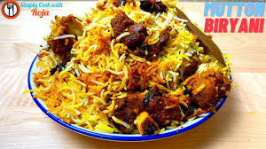

I am dedicated and passionate I am exploring various places and interactions of technology and creativity, with arts and science and engaging programs around the world.
Mutton biryani is a delicious Indian dish made with tender pieces of mutton (goat or lamb), fragrant rice, and lots of spices. First, the mutton gets soaked in yogurt and spices to make it tasty. Then, it's cooked together with rice in a big pot. This slow cooking blends all the flavors, making the dish very flavorful and yummy.
| name of a sport | reasons | hours spent in a week |
|---|---|---|
| Basket Ball | increases height | 4 hrs |
| Ruby | strenght improvemnet | 3 hrs |
| Football | stress releif | 4 hrs |
| Tennis | eye concertation | 2 hrs |
Remove Admin Bar For SubscribersLink to question
add_action('set_current_user', 'cc_hide_admin_bar');
function cc_hide_admin_bar() {
if (!current_user_can('edit_posts')) {
show_admin_bar(false);
}
}